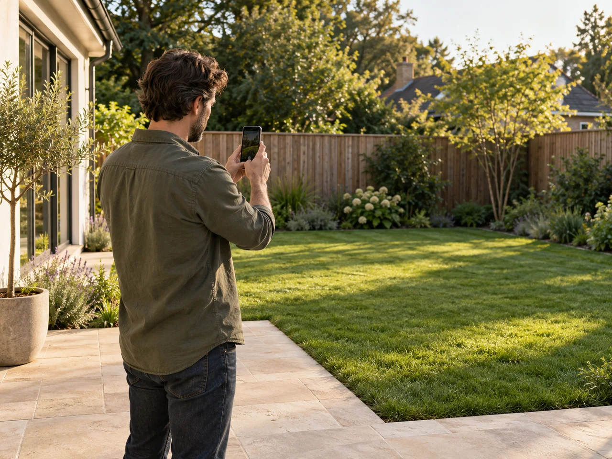
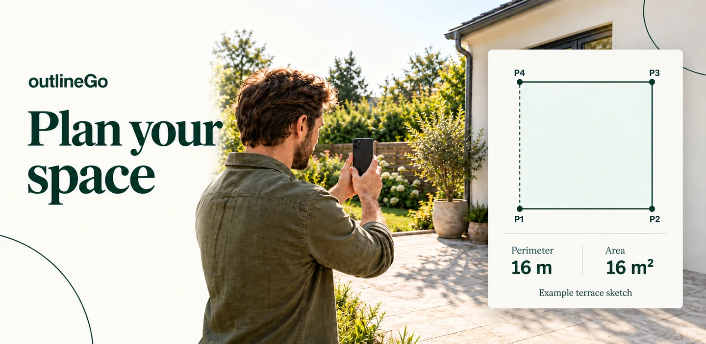
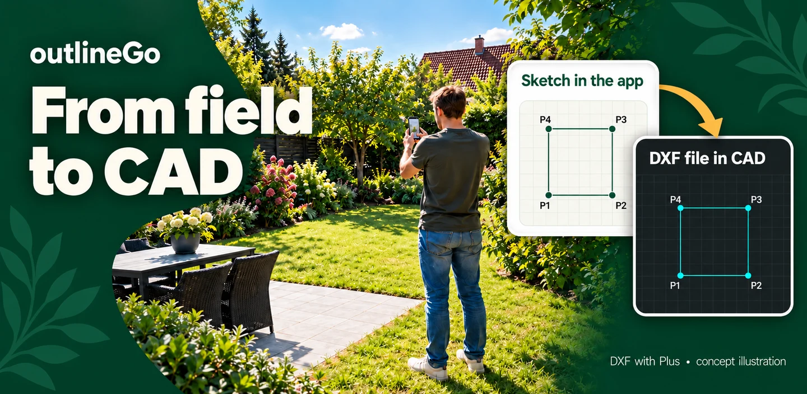

Point the way
Use the camera viewfinder and phone sensors to help set a direction, or adjust the angle manually.
Turn directions and lengths into a clear sketch. For everyday planning, first ideas and getting a sense of a space.

Use the camera viewfinder and phone sensors to help set a direction, or adjust the angle manually.
Enter a length in metric or imperial units, or estimate it from counted steps and your step length.
Watch the sketch take shape. Correct dimensions, add a note and return to your work later.
No outlineGo account or sketch upload. Sketches are stored on your phone. You choose when to export a file.
Keep the sketch beside your measuring controls, undock it or open it full screen. Choose a light, dark or system theme.
Export an image in PNG. Plus also includes DXF for working with the outline in compatible CAD software.
Make a first outline of a garden, patio or room. Keep dimensions and notes together, then take the result into your next step.

Record approximate dimensions before rearranging a space. Add a note so the little details stay with the sketch.

Share a PNG or export DXF with Plus for further work in compatible CAD software. Check dimensions and units before relying on the result.
Illustrative scenes and example outputs. App and CAD panels are concept illustrations. Measurements are approximate; DXF export requires Plus.
| Feature | Free | Plus |
|---|---|---|
| Saved sketches | Up to 3 | No product limit |
| Points per sketch | Up to 8, including the first point | No product limit |
| PNG export | With watermark | Without watermark |
| DXF export | — | Included |
| Notes and corrections | Included | Included |
Plus is a one-time in-app purchase through Google Play, with no subscription. Price and availability are shown in the store before purchase. Device storage and performance still apply.
For non-professional measurements. Phone sensors, step counting and manual input can introduce errors. Check dimensions with appropriate equipment before relying on them. Read the measurement notice.